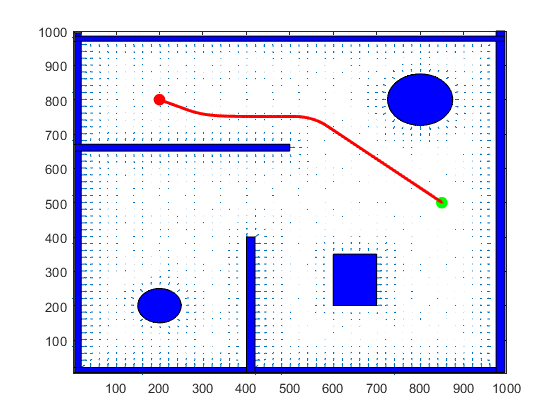

Contents
- Mohammed sohaib Assignment 3
- 1) Generate a rectangular workspace with three or more obstacles or a
- Now compute the distance transform
- 2) Mark the start point and the goal point in the workspace.
- 3) Define the potential field functions for attractive and repulsive fields.
- Generate feasible paths for pathplanning
- Plot the energ surface. as a path planning
- Plot a ball to vishualize
- Quiver plot with obstacles
- Final ploting
Mohammed sohaib Assignment 3
% Potential Potential field method to find a path from a start point to a % goal point in a 2D workspace with obstacles. clear all close all
1) Generate a rectangular workspace with three or more obstacles or a
room with walls and passage ways (doors).
nrows = 1000; ncols = 1000; obstacle = false(nrows,ncols); [x, y] = meshgrid(1:ncols, 1:nrows); obstacle(5:20, 5:995) = true; % rectangular obstacle obstacle(21:995,5:20) = true; % rectangular obstacle obstacle(975:995,21:995) = true; % rectangular obstacle obstacle(21:974,975:995) = true; % rectangular obstacle %------------------------------------------------- obstacle(650:670,21:500) = true; % rectangular obstacle obstacle(21:400,400:420) = true; % rectangular obstacle obstacle(200:350,600:700) = true; % rectangular obstacle t = ((x-200).^2 + (y-200).^2 < 50^2) ; %circular obstacle obstacle(t) = true; t = ((x-800).^2 + (y-800).^2 < 75^2) ; %circular obstacle obstacle(t) = true; %map every point where the obstacle lies as true. m = mesh(obstacle); axis equal obstacle; obstacle;
Now compute the distance transform
%from DistanceFromObstacle script and the scaling factor script d = bwdist(obstacle); %distance transform assigns a number that is the % distance between that pixel and the nearest nonzero pixel of BW. %bwdist is the matlab function which returns distance from any true element %in ostacle way
2) Mark the start point and the goal point in the workspace.
start = [200, 800]; goal = [850, 500];
3) Define the potential field functions for attractive and repulsive fields.
% Repulsive Potential K = 100; Rho = d/K +1; %Note some values in d might be 0 will cause problems in calculating the %repulsive force so we add a addition zero to aviod the division by zero. d0 = 2; %if any robot away form the obstacle by do unit its repulsive force %is considered zero Eta = 1000;%Used to control repulsive force large Eta will cause some balance %between repulsive and attractive forces we need to make large repulsive %force so that it dosent gets struck on obstacles. repulsive = (Eta/2)*((1./Rho-1/d0).^2); repulsive(Rho > d0) = 0; % stating the condition. %plotinng repulsive field % figure; % m = mesh(repulsive) % m.FaceLighting = 'phong'; % axis equal; % title ('Repulsive Potential'); % hold on max(max(repulsive)); %Attractive Potential zeta = 1/1500 ;% used to control the strength of attractivness towards goal if zeta = % 1/10000, the robot will not reach the location but it 1/10 it will cross % over the obstacle need to take an optimium solution. attractive = (zeta/2) * ( (x- goal(1)).^2 + (y-goal(2)).^2); %plot attractive field % figure; % m = mesh(attractive); % m.FaceLighting = 'phong'; % axis equal; % title ('Attractive Potential'); max(max(attractive)); % Compbined potential fields. f = attractive + repulsive; %plot combined field. figure; m = mesh(f); % m.FaceLighting('phong'); axis equal; title("Total Potential") max(max(f));
Generate feasible paths for pathplanning
%By gradient desent method. [gx, gy] = gradient(-f); route = start; Point_on_route = start; Speed = 3; Tolerance = 1; iterations =1000 ; while(iterations >0) if(norm(goal - Point_on_route)<Tolerance) break; end delta_x = gx(floor(Point_on_route(2)), floor(Point_on_route(1))); delta_y = gy(floor(Point_on_route(2)), floor(Point_on_route(1))); delta = [delta_x, delta_y]; %delta vector is both value and direction. delta_Direction_x = delta_x/norm(delta); delta_Direction_y = delta_y/norm(delta); new_route_x = Point_on_route(1) + Speed * delta_Direction_x; new_route_y = Point_on_route(2) + Speed * delta_Direction_y; Point_on_route = [new_route_x, new_route_y]; route = [route; Point_on_route]; iterations = iterations -1 ; end
Plot the energ surface. as a path planning
figure;
m = mesh(f);
axis equal

Plot a ball to vishualize
[sx, sy, sz] = sphere(); R = 10; sx = R*sx; sy = R*sy; sz = R*sz +R; % the lower half will not be vissible if added R hold on; p = mesh(sx,sy,sz); %this will plot the ball at 0,0,0 p.FaceColor = 'red'; p.EdgeColor = 'none'; % p.FaceLighting = 'phong'; hold off; hold on plot(goal(1),goal(2),'g*','MarkerSize',25); hold off %Plot the ball at each point in route from start to goal for i = 1:size(route,1) P = round(route(i,:)); %P = [x,y] z = f(P(2),P(1)); % z = f(x,y) %Draw the ball shifted to the new pos p.XData = sx + P(1); p.YData = sy + P(2); p.ZData = sz + f(P(2),P(1)); drawnow; pause(0.05) end
Quiver plot with obstacles
[gx, gy] = gradient(-f); skip = 20 ; figure ; xidx = 1:skip:ncols; yidx = 1:skip:nrows; quiver(x(yidx,xidx),y(yidx,xidx),gx(yidx,xidx),gy(yidx,xidx),0.4); axis([1 ncols 1 nrows]); hold on ; % Plot the rectangle rectangle('Position', [5, 5, 15, 990], 'FaceColor', 'blue', 'EdgeColor', 'black'); rectangle('Position', [5, 5, 990, 15], 'FaceColor', 'blue', 'EdgeColor', 'black'); rectangle('Position', [975,5, 20,995], 'FaceColor', 'blue', 'EdgeColor', 'black'); rectangle('Position', [5,970, 990,15], 'FaceColor', 'blue', 'EdgeColor', 'black'); rectangle('Position', [5,650, 495,20], 'FaceColor', 'blue', 'EdgeColor', 'black'); rectangle('Position', [400,5, 20,395], 'FaceColor', 'blue', 'EdgeColor', 'black'); rectangle('Position', [600,200, 100,150], 'FaceColor', 'blue', 'EdgeColor', 'black'); t = linspace(0,2*pi,100); x1 = 200 + 50*cos(t); y1 = 200 +50*sin(t); x2 = 800 + 75*cos(t); y2 = 800 +75*sin(t); hold on c = [0.8 0.7 0.8]; fill(x1,y1,'b'); fill(x2,y2,'b');
Final ploting
ps = plot(start(1), start(2), 'r.','MarkerSize',30); pg = plot(goal(1),goal(2),'g.',MarkerSize=30); pp3 = plot(route(:,1),route(:,2),'r','LineWidth',2);